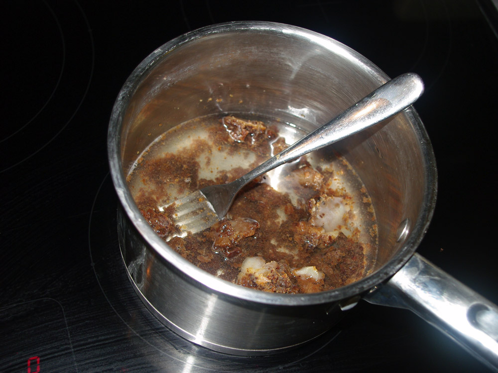
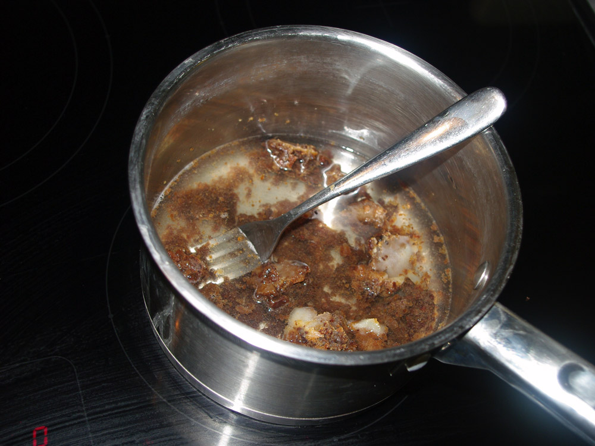
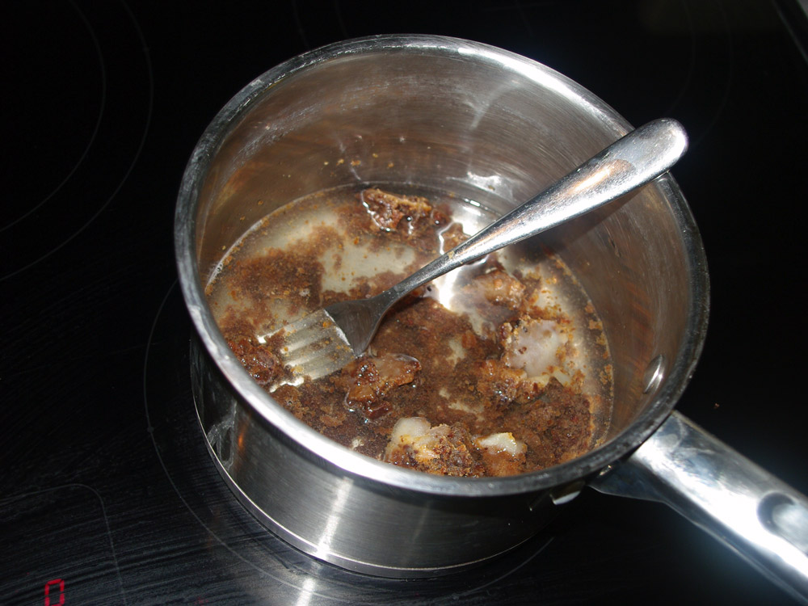
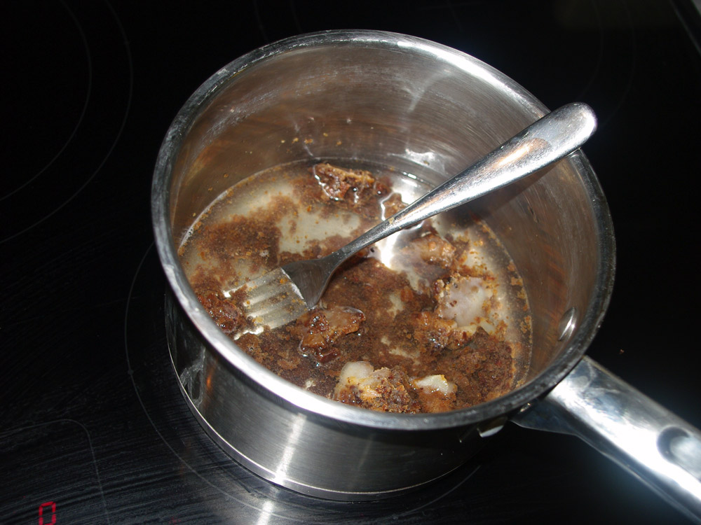

by Orate, Angelo Regis C.
A simple stew made in the field from pemmican, sledging biscuits and snow. This and little else than this was eaten by the teams of Scott and Amundsen to reach the South Pole and by all of the early Antarctic explorers. Hoosh has a good claim on being the most traditional recipe from Antarctica. It is one of the simplest of foods made from 3 ingredients, one of which you didn't even have to carry with you - snow or ice. In the Heroic Age of Antarctic Exploration, the explorers were powered along on a daily basis by hoosh.
I thought there might be a bit of a fat-slick from the pemmican but it wasn't to be seen at all, presumably dispersing itself through the hoosh. I couldn't get all of the meat in my pemmican down to a fine powder and so it had tiny pieces of jerky throughout (in a crunchy v smooth peanut butter sort of way) which I really liked, it gave me something to chew on and added texture.